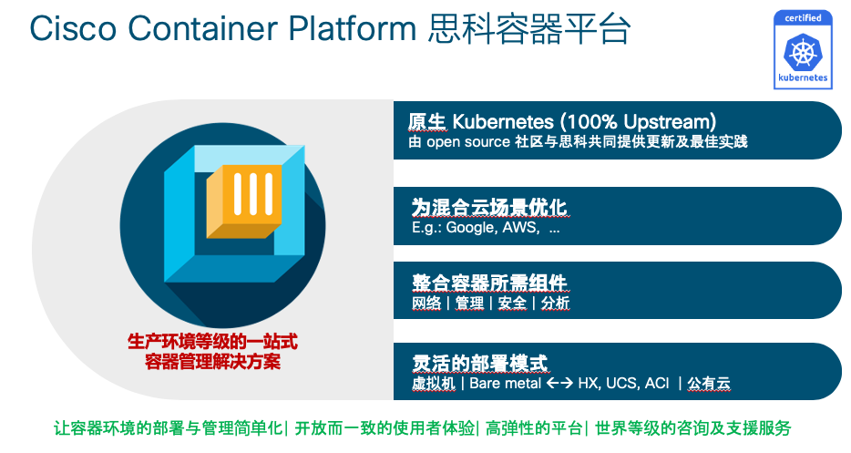

ACI CCP 集成
背景信息
CCP是思科推出的面向多云环境的一站式容器管理平台，具有以下特点：

Cisco Container Platform supports multiple Kubernetes CNI plugins such as:
-
ACI is the recommended plugin for use with an ACI fabric. It is optimized for use with an ACI fabric. ACI is fully supported by Cisco.
-
Calico is recommended when an ACI fabric is not used.
-
Contiv is a user space switch that is optimized for high performance and scale
访问👇下面的思科CCP官网，获取更多关于CCP的信息：